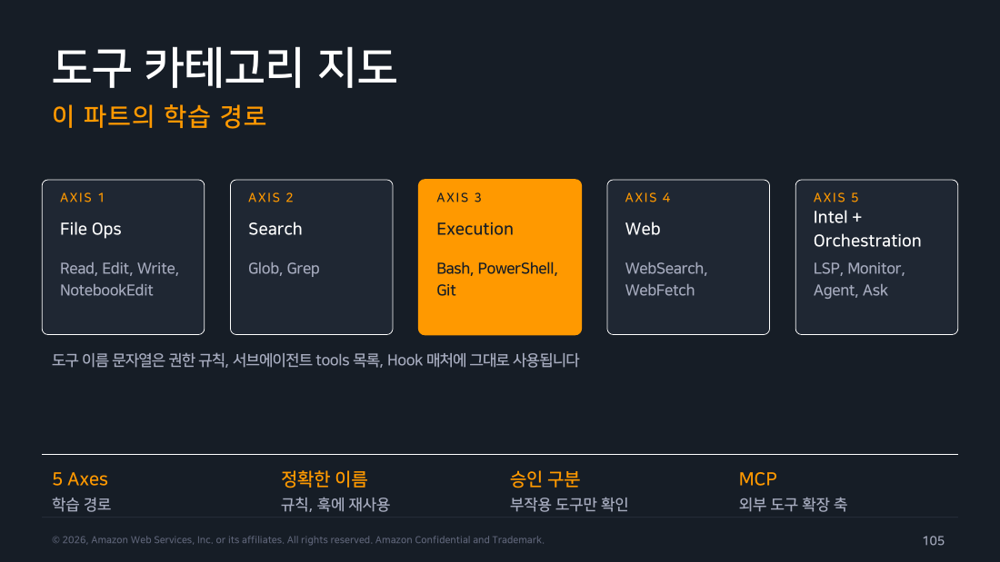
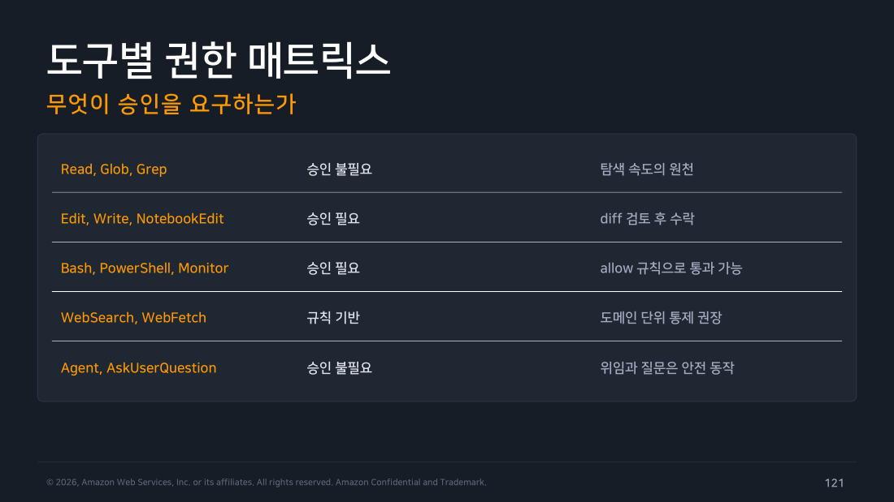

Part 6 — 핵심 도구 (Core Capabilities)¶
한 줄 요약¶
다섯 축의 내장 도구와 정확한 도구 이름, 그리고 승인 정책을 알면 권한 설계와 자동화가 한꺼번에 쉬워집니다.
왜 알아야 하나¶
Part 2에서 "도구가 있어야 에이전트가 된다"고 했습니다. Part 6은 그 도구를 하나씩 뜯어봅니다. 그런데 이걸 왜 굳이 외워야 할까요? 도구 이름 문자열이 그대로 재사용되기 때문입니다.
즉, 도구 이름을 정확히 알면 → 권한 규칙을 쓸 수 있고 → 자동화를 안전하게 무인 실행할 수 있습니다. 이 연쇄가 4·5·6주차 내용의 기반이 됩니다.
개념 1 — 도구 5축 지도¶
도구를 다섯 갈래로 나누면, 각 갈래가 Part 1의 Agentic Loop 어디를 담당하는지가 보입니다.
flowchart TD
subgraph G1 ["컨텍스트 수집"]
S["<b>Search</b><br/>Glob · Grep<br/><i>무엇을 바꿀지 찾기</i>"]
R["<b>File Ops (읽기)</b><br/>Read<br/><i>코드 이해하기</i>"]
W["<b>Web</b><br/>WebSearch · WebFetch<br/><i>세션 밖 지식</i>"]
end
subgraph G2 ["행동"]
F["<b>File Ops (쓰기)</b><br/>Edit · Write · NotebookEdit<br/><i>실제 변경</i>"]
end
subgraph G3 ["검증"]
E["<b>Execution</b><br/>Bash · PowerShell · Git<br/><i>테스트·빌드로 확인</i>"]
L["<b>Code Intel</b><br/>LSP<br/><i>타입 오류·참조 확인</i>"]
end
subgraph G4 ["오케스트레이션"]
O["<b>Agent · Monitor · AskUserQuestion</b><br/><i>위임 · 관찰 · 되묻기</i>"]
end
G1 --> G2 --> G3
G3 -.->|반복| G1
G4 -.-> G1
style S fill:#e8f5e9,stroke:#388e3c,color:#000
style R fill:#e8f5e9,stroke:#388e3c,color:#000
style W fill:#e8f5e9,stroke:#388e3c,color:#000
style F fill:#e3f2fd,stroke:#1976d2,color:#000
style E fill:#fff3e0,stroke:#f57c00,color:#000
style L fill:#fff3e0,stroke:#f57c00,color:#000
style O fill:#ede7f6,stroke:#673ab7,color:#000검색 도구가 무엇을 바꿀지 찾아내고, 읽기 도구가 그 코드를 이해하게 하고, 웹 도구가 세션 밖의 지식을 끌어옵니다. 여기까지가 수집입니다.
쓰기 도구가 실제 변경을 만들고, 실행 도구가 그 변경이 맞았는지 테스트로 확인합니다. 코드 인텔리전스는 텍스트 검색으로는 알 수 없는 타입 정보로 검증을 보강합니다.
오케스트레이션 도구는 이 루프 자체를 조율합니다. 곁가지를 서브에이전트에 맡기고, 백그라운드 출력을 관찰하고, 애매하면 나에게 되묻습니다.
그리고 여기에 MCP가 외부 도구 확장 축으로 붙습니다.

▲ 교재 슬라이드 105 — 도구 카테고리 5축 지도
축 1 — 파일 조작¶
Read — 파일 읽기와 멀티모달¶
> src/auth/session.ts 읽고 만료 로직 설명해줘
# 큰 파일은 필요한 라인 범위만 선택적으로 읽음
> 이 스크린샷의 에러를 봐줘 (이미지 드래그 또는 붙여넣기)
# PNG, JPG 등 이미지를 직접 이해
> design.pdf의 3장 요구사항을 정리해줘
# PDF 문서 읽기 지원
특성:
- 승인 불필요
- 접근 범위는 작업 디렉토리 기준
- 외부 경로는 --add-dir 또는 /add-dir로 확장
Edit — 정밀 수정 (diff 승인 기반)¶
Edit 승인 화면:
- 변경 전후 diff 표시
- y 수락 / n 거절 / e 직접 수정
멀티 파일 수정: 관련 파일들을 연속 Edit로 일괄 처리하며, 각 편집 전 스냅샷이 자동 저장됩니다 (rewind 가능).
초보자에게 가장 중요한 습관
승인 화면에서 y를 반사적으로 누르지 말고 diff를 실제로 읽으세요. 이 습관이 있으면 Accept Edits나 Auto 모드로 넘어갈 때 무엇을 자동화해도 되는지 감이 생깁니다.
Write와 NotebookEdit¶
> tests/checkout.test.ts 파일을 새로 만들어 만료 카드 케이스 3개를 작성해줘
# Write: 신규 파일 생성, 승인 필요
> analysis.ipynb의 2번 셀을 pandas 2.x 문법으로 업데이트하고 실행 결과도 갱신해줘
# NotebookEdit: Jupyter 셀 단위 수정
Warning
실행 가능한 파일을 생성할 때는 acceptEdits 모드에서도 확인 프롬프트가 표시됩니다.
축 2 — 검색¶
Grep과 Glob¶
> processPayment를 호출하는 곳을 전부 찾아줘
# Grep: ripgrep 기반 내용 검색, 정규식 지원
> src 아래 *.test.ts 파일 목록 보여줘
# Glob: 파일명 패턴 매칭
조합 패턴:
두 도구 모두 승인이 불필요합니다. 이게 탐색이 빠른 이유입니다. 읽기와 검색은 부작용이 없으므로 자유롭게 돌 수 있고, 부작용이 있는 편집·실행에서만 사람이 개입합니다.
축 3 — 실행¶
Bash — 포그라운드와 백그라운드¶
> npm run build 실행하고 오류 있으면 고쳐줘
# 명령별 승인. allow 규칙으로 자주 쓰는 것은 통과시킴
> 개발 서버를 백그라운드로 띄우고 로그에 에러가 보이면 알려줘
# 장시간 프로세스는 백그라운드 실행
# 이후 출력 감시는 Monitor 도구와 연계
세션 특성:
- 작업 디렉토리 유지, 타임아웃 존재
- 위험 명령은 deny 규칙으로 사전 차단
PowerShell — Windows 네이티브 셸¶
Git for Windows가 없는 네이티브 Windows에서는 셸 명령이 PowerShell 도구로 실행됩니다.
Git Bash가 있는 환경에서 선택적으로 쓰려면:
권한 규칙에서는PowerShell(...) 형식으로 매칭합니다.
축 4 — 웹¶
> 이 에러 메시지 최근 알려진 원인 검색해줘: ERR_OSSL_EVP_UNSUPPORTED
# WebSearch: 웹 검색 결과 요약
> https://code.claude.com/docs/en/hooks 읽고 PreToolUse 입력 형식을 정리해줘
# WebFetch: URL 콘텐츠 조회
통제: WebFetch(domain:docs.example.com) 형식으로 권한 규칙에서 도메인 단위 allow/deny를 걸 수 있습니다.
현장 메모
사내망 정책상 외부 조회를 제한해야 한다면, 전면 deny보다 사내 문서 도메인만 allow하는 화이트리스트 방식이 실용적입니다. 공식 문서 도메인(code.claude.com)을 허용해두면 최신 사양 확인이 세션 안에서 끝납니다.
축 5 — 코드 인텔리전스와 오케스트레이션¶
LSP — 언어 서버 기반 정적 이해¶
LSP(Language Server Protocol)는 IDE가 타입 오류에 빨간 줄을 긋고 "정의로 이동"을 제공하는 바로 그 기술입니다. Claude Code도 같은 언어 서버에 붙습니다.
쓰임새는 세 가지입니다.
편집 직후 진단이 가장 실용적입니다. Edit로 코드를 고친 직후 타입 오류가 났는지 즉시 확인하고, 났으면 바로 다시 고칩니다. 테스트를 돌리기 전에 명백한 실수를 걸러냅니다.
정의로 이동해서 심볼이 실제로 어디서 정의됐는지 확인합니다. 같은 이름의 함수가 여러 개일 때 엉뚱한 걸 보고 판단하는 걸 막아줍니다.
참조 찾기로 변경의 영향 범위를 정량적으로 파악합니다. "이 함수를 고치면 15군데가 영향받는다"를 알고 시작하는 것과 모르고 시작하는 건 다릅니다.
활성화하려면 언어별 code intelligence 플러그인을 설치합니다.
LSP가 Grep을 대체하는 게 아니라 보완합니다
getUser라는 문자열을 grep하면 주석에 적힌 것, 문자열 리터럴 안의 것, 비슷한 이름의 다른 함수까지 전부 걸립니다.
LSP는 실제 심볼 참조만 정확히 찾습니다. 텍스트가 아니라 코드 구조를 이해하기 때문입니다.
빠르게 훑을 때는 Grep, 정확해야 할 때는 LSP입니다.
Monitor — 출력을 지켜보다 반응하는 도구¶
동작: - 백그라운드 명령의 출력 라인을 실시간 수신 - 각 라인이 이벤트로 Claude에게 전달 - WebSocket 연결의 수신 메시지도 이벤트화
활용: dev 서버 감시, 파일 변경 폴링, 장시간 배치의 진행 관찰과 자동 대응.
Agent — 서브에이전트 (2주차 미리보기)¶
Agent도구는 독립 컨텍스트를 가진 서브에이전트를 생성합니다. 곁가지 작업이 본 대화를 부풀리지 않고, 완료 시 요약만 돌아옵니다.
| 축 | 내용 |
|---|---|
| WHY — 컨텍스트 격리 | 탐색성 작업의 대량 출력이 메인 대화를 오염시키지 않음 |
| HOW — 자동/명시 호출 | 작업 성격에 따라 자동 위임, 또는 명시적으로 지정 호출 |
| SCALE — 병렬 실행 | 독립 작업 여러 개를 동시에. /batch는 워크트리 격리까지 |
| NEXT | 맞춤 서브에이전트 정의와 5대 실전 패턴은 2주차 Chapter 2 |
AskUserQuestion과 예약 도구¶
AskUserQuestion |
CronCreate / CronList / CronDelete |
|---|---|
| 요구사항이 모호할 때 객관식 질문 제시 | 세션 내 반복·일회성 프롬프트 예약 |
| 잘못된 가정으로 달리는 것을 방지 | /loop로 폴링형 반복 실행 |
| 선택지가 곧 설계 옵션 정리가 됨 | resume 시 미만료 예약 복원 |
| 승인 불필요, 흐름에 자연스럽게 통합 | 머신 독립 예약은 Routines (Part 9) |
개념 2 — Git 워크플로¶
일상 작업¶
> 지금 변경사항 요약해줘
# git status, git diff를 읽고 자연어로 요약
> 이 변경을 논리 단위로 나눠서 스테이징해줘
# 관련 파일끼리 묶어 git add 제안
> main과 충돌났어, 해결해줘
# 충돌 마커를 읽고 양쪽 의도를 병합
Claude는 git 상태를 항상 인지하고 있습니다 — 현재 브랜치, 미커밋 변경, 최근 커밋 이력.
커밋 메시지와 PR 생성¶
> 설명적인 메시지로 커밋해줘
# 최근 커밋 스타일을 읽어 컨벤션 준수
# conventional commits를 쓰는 저장소면 그 형식으로
> 이 브랜치로 PR 만들어줘. 리뷰어가 봐야 할 변경 요점과 테스트 방법 포함해서.
# 브랜치 push, PR 본문 작성까지 일괄
> /code-review --comment
# 리뷰 결과를 PR 인라인 코멘트로 게시
gh CLI 통합¶
gh CLI가 설치되어 있으면 그대로 활용합니다. 인증은 gh auth login 상태를 재사용합니다.
> 나에게 할당된 열린 이슈 보여줘
# → gh issue list --assignee @me
> 123번 이슈 읽고 이 저장소에서 재현되는지 확인해줘
# → gh issue view 123 후 코드 탐색
> CI 실패한 최근 PR의 로그 분석해줘
# → gh run list, gh run view --log 조합
개념 3 — 권한 규칙 문법¶
.claude/settings.json:
{
"permissions": {
"allow": [
"Bash(npm test)",
"Bash(npm run lint:*)",
"Read(./src/**)"
],
"ask": [
"Bash(git push:*)"
],
"deny": [
"Read(./.env*)",
"Bash(rm -rf:*)",
"WebFetch"
]
}
}
문법 규칙:
| 요소 | 의미 |
|---|---|
Tool(pattern) |
규칙 기본형 |
:* |
접두 와일드카드 (npm run lint:* → npm run lint:fix 등 매칭) |
| 충돌 시 | 구체성 우선 — 더 구체적인 규칙이 이김 |
deny |
항상 최우선 — 차단이 언제나 승리 |
현장 메모
deny에 Read(./.env*)를 넣는 건 필수입니다. 시크릿 파일을 아예 읽지 못하게 하면, 실수로 컨텍스트에 키가 올라가는 사고 자체가 원천 차단됩니다.
도구별 승인 매트릭스¶
승인 정책에는 일관된 원리가 하나 있습니다. 부작용이 있으면 묻고, 없으면 안 묻습니다.
flowchart TD
Q{"이 도구가<br/>바깥 세상을<br/>바꾸는가?"}
Q -->|"아니오 — 읽기만"| N["<b>승인 불필요</b><br/><br/>Read · Glob · Grep<br/>Agent · AskUserQuestion<br/><br/><i>탐색 속도의 원천</i>"]
Q -->|"예 — 파일을 바꿈"| E["<b>승인 필요</b><br/><br/>Edit · Write · NotebookEdit<br/><br/><i>diff 검토 후 수락</i>"]
Q -->|"예 — 명령을 실행"| B["<b>승인 필요</b><br/><br/>Bash · PowerShell · Monitor<br/><br/><i>allow 규칙으로 통과 가능</i>"]
Q -->|"경우에 따라 다름"| W["<b>규칙 기반</b><br/><br/>WebSearch · WebFetch<br/><br/><i>도메인 단위 통제 권장</i>"]
style Q fill:#673ab7,stroke:#4527a0,stroke-width:3px,color:#fff
style N fill:#e8f5e9,stroke:#388e3c,color:#000
style E fill:#fff3e0,stroke:#f57c00,color:#000
style B fill:#ffebee,stroke:#d32f2f,color:#000
style W fill:#e3f2fd,stroke:#1976d2,color:#000읽기와 검색은 안 묻습니다. 파일을 읽거나 패턴을 찾는 건 아무것도 망가뜨리지 않기 때문입니다. 그래서 Claude가 저장소를 마음껏 훑을 수 있고, 이게 탐색이 빠른 이유입니다.
서브에이전트 생성과 질문도 안 묻습니다. 위임과 되묻기는 그 자체로 안전한 동작입니다.
파일 편집과 명령 실행은 묻습니다. 여기서만 사람이 개입하면 되도록 설계되어 있습니다. 자주 쓰는 안전한 명령은 allow 규칙으로 통과시켜서 승인 피로를 줄입니다.
웹 도구는 중간입니다. 조회 자체는 안전하지만 어떤 도메인에 나가느냐가 조직마다 다르므로 규칙으로 통제합니다.

▲ 교재 슬라이드 121 — 도구별 권한 매트릭스
개념 4 — Sandboxed Bash¶
샌드박스 Bash는 명령을 격리 환경에서 실행합니다. 쓰기 가능한 경로와 나갈 수 있는 도메인을 정책으로 제한해, 더 높은 자율성을 안전하게 허용합니다.
| 축 | 내용 |
|---|---|
| FS — 파일시스템 격리 | 정책이 허용한 경로만 쓰기 가능, 그 외는 읽기 전용 |
| NET — 네트워크 격리 | 허용 도메인 목록 밖의 아웃바운드 차단 |
| WHERE — 지원 플랫폼 | macOS, Linux, WSL2 지원. 네이티브 Windows 미지원 |
| ALT — 격리 스펙트럼 | 샌드박스, devcontainer, Docker, VM 중 위협 모델로 선택 |
핵심 아이디어: 권한 승인을 매번 누르는 대신 실행 반경 자체를 좁혀서 자율성을 올린다는 발상입니다.
개념 5 — 안전 가드레일 종합¶
Part 6에서 배운 안전선을 시점별로 정리하면:
| 가드 | 수단 | 시점 |
|---|---|---|
| 권한 규칙 | allow / ask / deny와 도구 패턴으로 사전 통제 |
사전 |
| 모드 선택 | Plan부터 Auto까지 위험도에 맞춘 자율성 다이얼 | 사전 |
| 체크포인트 | 편집 전 스냅샷과 rewind로 사후 복구 보장 |
사후 |
| 샌드박스 | 경로와 도메인 격리로 실행 반경 자체를 제한 | 반경 |
| 감사 | 세션 기록, Hooks | 감사 |
직접 해보기 — 권한이 정말 막는지 실제로 검증¶
문서에 "승인이 필요하다"라고 써놓고 넘어가기가 싫어서, 쓰기 도구를 뺀 상태로 일부러 파일 수정을 시켜봤습니다. (2026-08-02 실행)
$ claude -p "CHANGELOG.md 파일 맨 아래에 '테스트' 라는 줄을 추가해줘" \
--allowed-tools "Read,Grep,Glob" --output-format json
Claude의 응답:
CHANGELOG.md 맨 아래에
테스트줄을 추가하려 했으나, 파일 쓰기 권한이 아직 허용되지 않아 편집이 적용되지 않았습니다.
permission_denials 필드:
[{
"tool_name": "Edit",
"tool_use_id": "toolu_01TQ6nnwGAphwTpKiDB98xrb",
"tool_input": {
"file_path": ".../CHANGELOG.md",
"old_string": "...",
"new_string": "...\n\n테스트\n"
}
}]
파일이 실제로 변경됐는지:
직접 해보고 알게 된 것
- Claude는
Edit를 시도했고, 하네스가 차단했으며, 파일은 그대로였습니다. Part 2의 "하네스가 도구 실행 전에 권한을 검사한다"는 구조가 그대로 확인됩니다. - 예상 밖이었던 건
permission_denials에 시도하려던tool_input이 통째로 기록된다는 점입니다. 어떤 파일의 어떤 문자열을 어떻게 바꾸려 했는지가 다 남습니다. → 즉 무인 실행(CI)에서 "에이전트가 뭘 하려다 막혔는지"를 그대로 감사 로그로 뽑을 수 있습니다. 화이트리스트를 좁게 시작해서, 실제로 막힌 목록을 보고 필요한 것만 열어주는 운영이 가능합니다. - 차단당해도 실패로 끝나지 않았습니다. "권한을 허용해 주시면 반영하겠다"며 적용될 내용까지 설명했습니다.
deny는 작업을 죽이는 게 아니라 사람에게 결정을 되돌려주는 장치입니다.
이어서 직접 해볼 것:
# 승인 불필요 도구가 얼마나 빠른지 체감
> 이 저장소에서 TODO 주석이 달린 파일을 전부 찾아 표로 정리해줘
# Edit 승인 화면에서 diff 읽기 연습 (y 누르기 전에 반드시 읽기)
> README.md 맨 아래에 "## 학습 메모" 섹션을 추가해줘
# 권한 규칙 직접 작성
$ mkdir -p .claude && cat > .claude/settings.json <<'EOF'
{
"permissions": {
"allow": ["Bash(npm test)", "Read(./src/**)"],
"deny": ["Read(./.env*)", "Bash(rm -rf:*)"]
}
}
EOF
> /permissions # 적용 상태 확인
정리¶
- 도구는 파일 / 검색 / 실행 / 웹 / 인텔리전스 5축이고, 여기에 MCP가 확장 축으로 붙습니다.
- 읽기·검색은 승인 불필요, 편집·실행은 승인 필요. 이 구분이 속도와 안전의 균형점입니다.
- 도구 이름 문자열은 권한 규칙·서브에이전트 tools·Hook 매처에 그대로 재사용됩니다.
- 권한 규칙은
Tool(pattern)형식이고,deny가 항상 이깁니다. - 샌드박스는 승인을 줄이는 게 아니라 실행 반경을 줄여서 자율성을 안전하게 올리는 장치입니다.
- Git은 별도 통합이 아니라
Bash+ghCLI를 그대로 쓰는 구조입니다.
출처¶
- Claude Code Deep Dive Workshop — Chapter 1 / Part 6: Core Capabilities (21p)
- 공식 문서: Tools reference · Settings · Sandboxing · Security · Sub-agents